🥕 Ингредиент
 Гамбургер с МоззаринойРедкий · вес 0,5
Гамбургер с МоззаринойРедкий · вес 0,5
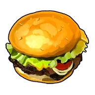
Гамбургер с Моззариной
Идеальное сочетание вкуса сочной говядины и сладости булочек. На некоторое время после еды немного увеличивается скорость работы, а снижение рассудка замедляется.
Горячее молоковес 1,5
Горячее молоко
Стало ещё вкуснее в подогретом виде. На удивление хорошо насыщает.
 ГратенРедкий · вес 0,5
ГратенРедкий · вес 0,5
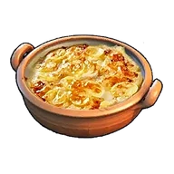
Гратен
Картофель в соусе, запечённый до румяной корочки. Особенно вкусен в горячем виде. Даёт ощущение сытости на некоторое время и увеличивает Защита +10%.
 Грибвес 1
Грибвес 1
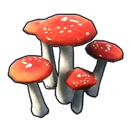
Гриб
Гриб, который можно есть сырым. Если походить по острову, можно найти почти везде.
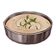
Грибной супвес 0,5
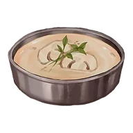
Грибной суп
Крем-суп с ингредиентом «Гриб». После употребления на некоторое время дольше сохраняется чувство сытости.
 Грибной тортНеобычный · вес 1
Грибной тортНеобычный · вес 1
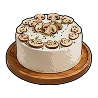
Грибной торт
Если поместить в сундук Пастбище свиданий, съевшие его Палы наберутся сил и отложат яйца. У потомства немного повышается шанс развития талантов.
 Дзингискан из ЛамболлаНеобычный · вес 0,5
Дзингискан из ЛамболлаНеобычный · вес 0,5
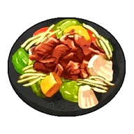
Дзингискан из Ламболла
Тщательно обжаренная на углях маринованная баранина. На некоторое время после еды немного увеличивается скорость работы, а снижение рассудка замедляется.
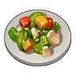
Жареные овощиНеобычный · вес 0,5
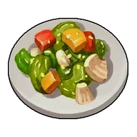
Жареные овощи
Блюдо из ингредиентов «Морковь» и «Лук», обжаренных в масле. Простое и вкусное овощное блюдо. Ненадолго немного повышает скорость работы и увеличивает Защита +10%.
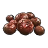
Жареные ягодывес 0,15
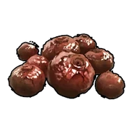
Жареные ягоды
Благодаря обжарке повысилась питательная ценность. На удивление хорошо насыщает.
 Жареный Скатласс с сольюНеобычный · вес 1
Жареный Скатласс с сольюНеобычный · вес 1
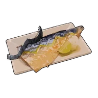
Жареный Скатласс с солью
Блюдо из свежего филе Скатласса, щедро посыпанного солью и запечённого на огне. На некоторое время делает невосприимчивым к отбрасыванию и оглушающему откату.
 Жареный грибвес 1
Жареный грибвес 1
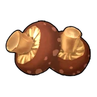
Жареный гриб
Гриб, ставший более питательным после обжарки. На удивление хорошо насыщает.
 Загадочный грибвес 1
Загадочный грибвес 1
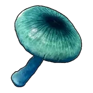
Загадочный гриб
Гриб, непригодный для употребления в сыром виде. После употребления вызывает быстрое чувство голода.
Запечённый Иктирдирвес 2
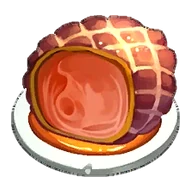
Запечённый Иктирдир
Тщательно запечённое мясо оленя, наполненное ароматом густого леса. Изысканный вкус этого блюда приносит уют и особую атмосферу в повседневную жизнь.
 Запечённый Каприти с травамивес 2,5
Запечённый Каприти с травамивес 2,5
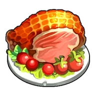
Запечённый Каприти с травами
Деликатно обжаренное мясо с природным ароматом трав и ягод. В походных условиях дарит тепло и чувство полного удовлетворения.
 Запечённый Ламболл с травамиНеобычный · вес 0,5
Запечённый Ламболл с травамиНеобычный · вес 0,5
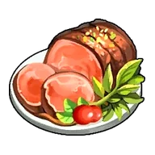
Запечённый Ламболл с травами
Свежие ягоды подчёркивают характерный вкус баранины, придавая блюду аппетитный аромат. На некоторое время после еды Защита +10%
Запечённый Рашоавес 2
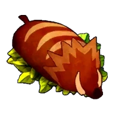
Запечённый Рашоа
Кусок сочного мяса кабана, зажаренный на открытом огне. Снаружи — хрустящая корочка, внутри — нежная, тающая текстура. Идеально подойдёт для праздничного стола.
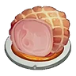
Запечённый Рейндриксвес 2
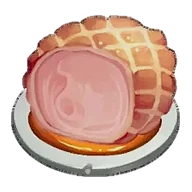
Запечённый Рейндрикс
Мясо ледяного оленя обладает уникальным свойством — после извлечения из огня оно мгновенно остывает, сохраняя свежесть. Превосходный вариант для длительного хранения и экстренных ситуаций.
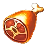
Запечённый на кости БрончерриНеобычный · вес 5
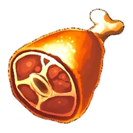
Запечённый на кости Брончерри
Отборный кусок жареного мяса, в котором чувствуется вкус дикого властелина. Из костей сочится насыщенный мясной сок, а само мясо — упругое снаружи, но удивительно нежное внутри.
 Зонтик медузы ДжелиэттыНеобычный · вес 5
Зонтик медузы ДжелиэттыНеобычный · вес 5
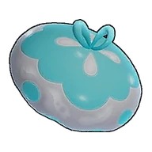
Зонтик медузы Джелиэтты
Зонтик Джелиэтта. Уникальная хрустящая текстура, от которой невозможно отказаться — настоящий морской деликатес.
 Зонтик медузы ДжелрояНеобычный · вес 5
Зонтик медузы ДжелрояНеобычный · вес 5
Зонтик медузы Джелроя
Зонтик Джелрой. Уникальная плотная и упругая текстура, от которой невозможно отказаться — настоящий морской деликатес.
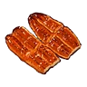
Кабаяки из Думадавес 2
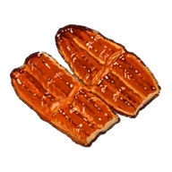
Кабаяки из Думада
Обжаренная в секретном соусе рыба, настолько вкусная, что исцеляет и тело, и душу. Идеальное блюдо для уставшего укротителя Палов.
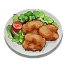
Караагэ из ЧикипиРедкий · вес 0,5
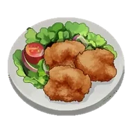
Караагэ из Чикипи
Невероятно сочное блюдо из курицы. На некоторое время после еды скорость работы немного повышается, снижение рассудка замедляется.
 Карамельная сахарная ватаНеобычный · вес 0,2
Карамельная сахарная ватаНеобычный · вес 0,2
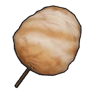
Карамельная сахарная вата
Сахарная вата со вкусом карамели, добываемая из пала «Вулипоп Терра». Нежная сладость, тающая во рту.
 Карбонаравес 0,5
Карбонаравес 0,5
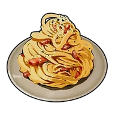
Карбонара
Блюдо из пасты с ингредиентами «Яйцо» и «Молоко». После употребления на некоторое время увеличивает Защита +20%.
 Карри с мясом МамморестаЭпический · вес 0,5
Карри с мясом МамморестаЭпический · вес 0,5
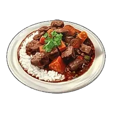
Карри с мясом Маммореста
Овощи и мясо, тушённые со специями. Блюдо с крупными кусками мяса и насыщенным вкусом. На некоторое время после употребления увеличивает Атака +25%.
 Картофельвес 1
Картофельвес 1
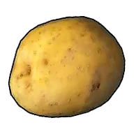
Картофель
Сытная, неприхотливая к почве и урожайная культура. Не подходит для употребления в сыром виде.
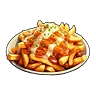
Картофель фриНеобычный · вес 0,5
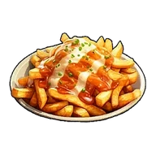
Картофель фри
Картофель, обжаренный в масле. Стоит попробовать — и остановиться невозможно. Немного замедляет снижение рассудка на некоторое время.
 Качающееся желе ДжелрояНеобычный · вес 1
Качающееся желе ДжелрояНеобычный · вес 1
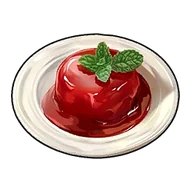
Качающееся желе Джелроя
Причудливый десерт, для приготовления которого используется Зонтик медузы Джелроя и Красная ягода. На некоторое время немного увеличивает количество получаемого опыта. Защита +10%
 Кебаб из Ламболлавес 1
Кебаб из Ламболлавес 1
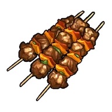
Кебаб из Ламболла
Блюдо из баранины, запечённой в пряном маринаде. Обладает насыщенным и ярко выраженным характером вкуса.
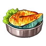
Келпси на угляхвес 1
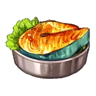
Келпси на углях
Свежая рыба, запечённая на углях, обладает нежной и воздушной текстурой.
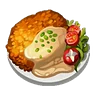
Келпси-фрайРедкий · вес 0,5
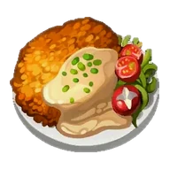
Келпси-фрай
Упругое рыбное филе в хрустящей корочке. На некоторое время после еды Защита +10%, снижение рассудка замедляется.
 Киш с грибамиЭпический · вес 0,5
Киш с грибамиЭпический · вес 0,5
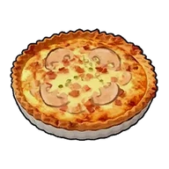
Киш с грибами
Пирог с начинкой из яиц, овощей, грибов и сливок. Остаётся вкусным даже в холодном виде. Даёт ощущение сытости на некоторое время и замедляет снижение рассудка.
 Красная ягодавес 0,2
Красная ягодавес 0,2
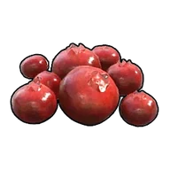
Красная ягода
Универсальный продукт, вкусный как в сыром, так и в жареном виде. Растёт на всей территории острова.
 Крокодилье мясо МанчиллыНеобычный · вес 5
Крокодилье мясо МанчиллыНеобычный · вес 5
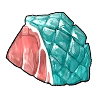
Крокодилье мясо Манчиллы
Мясо Манчилл. Плотное, с приятной жёсткостью, с каждым укусом раскрывается глубокий и насыщенный вкус.
 Латуквес 1
Латуквес 1
 Локо-моко из ИктирдираРедкий · вес 0,5
Локо-моко из ИктирдираРедкий · вес 0,5
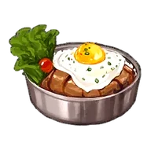
Локо-моко из Иктирдира
Сочная котлета и глазунья с нежным, тягучим желтком. Этот совершенный дуэт дарит во рту настоящее счастье. На некоторое время после еды Атака +20%.
 Луквес 1
Луквес 1
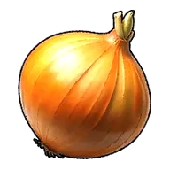
Лук
Легко выращиваемая культура, любимая с давних времён. Не подходит для употребления в сыром виде.
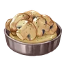
Маринованные грибывес 0,5
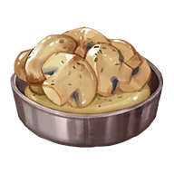
Маринованные грибы
Маринованные в маринаде Гриб. После употребления на некоторое время увеличивает Защита +10%.
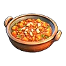
МинестронеРедкий · вес 0,5
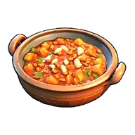
Минестроне
Суп с большим количеством овощей. Согревает изнутри. На некоторое время увеличивает скорость работы.
 Молоковес 1,5
Молоковес 1,5
Молоко
Можно пить как есть или использовать в готовке. Получается от пала «Моззарина».
 Морковьвес 1
Морковьвес 1
Морковь
Яркий и питательный корнеплод. Не подходит для употребления в сыром виде.
 Мукавес 0,1
Мукавес 0,1
 Мясо БрончерриНеобычный · вес 5
Мясо БрончерриНеобычный · вес 5
Мясо Брончерри
Мясо Брончерри. Огромный кусок мяса, таящий в себе мощную энергию. Кладезь питательных веществ, накопленных с помощью фотосинтеза.
 Мясо Думадавес 2
Мясо Думадавес 2
Мясо Думада
Мясо Думад. С жирной прослойкой, насыщенное вкусом и ароматом. Мягкая, пышная текстура придаёт ему особую привлекательность.
 Мясо Иктирдиравес 2
Мясо Иктирдиравес 2
Мясо Иктирдира
Мясо Иктирдир. Лёгкое и нежирное, но при этом очень вкусное мясо.
 Мясо Капритивес 2,5
Мясо Капритивес 2,5
Мясо Каприти
Мясо Каприти. Полезное, богатое питательными веществами мясо. Исходящий от него ягодный аромат пробуждает аппетит.
 Мясо Келпсивес 1
Мясо Келпсивес 1
Мясо Келпси
Мясо Келпси. Отличается упругой текстурой и лёгкой сладостью. Рыбное мясо, поэтому быстро портится.
 Мясо Ламболлавес 1
Мясо Ламболлавес 1
Мясо Ламболла
Мясо Ламболл. Красное мясо с выразительным, характерным вкусом. Имеет специфический привкус, но остаётся вкусным.
 Мясо МамморестаНеобычный · вес 5
Мясо МамморестаНеобычный · вес 5
Мясо Маммореста
Мясо Мамморест. Характеризуется мощным и впечатляющим вкусом. Огромный объем насытит даже самого прожорливого едока.
 Мясо Моззаринывес 2,5
Мясо Моззаринывес 2,5
Мясо Моззарины
Мясо Моззарина. Мясистое и сочное мраморное мясо с ярким вкусом. Любимое лакомство жителей острова Палпагос.
 Мясо Рашоавес 2
Мясо Рашоавес 2
Мясо Рашоа
Мясо Рашоа. Сочное, питательное и с ярко выраженным вкусом дичи.
 Мясо Рейндриксавес 2
Мясо Рейндриксавес 2
Мясо Рейндрикса
Мясо Рейндрикс. Удивительное оленье мясо, всегда сохраняющее низкую температуру. Хранится невероятно долго.
 Мясо Чикипивес 1
Мясо Чикипивес 1
Мясо Чикипи
Мясо Чикипи. Обладает лёгким вкусом и легко усваивается. Жители острова Палпагос едят его с удовольствием.
 Мясо Эрмургавес 1
Мясо Эрмургавес 1
Мясо Эрмурга
Мясо Эрмург. Питательное и обладает насыщенным вкусом.
 Мёдвес 0,2
Мёдвес 0,2
Мёд
Мёд, добываемый из пала «Бигард». Сладкий и вкусный.
 Никудзяга из ЭрмургаЭпический · вес 0,5
Никудзяга из ЭрмургаЭпический · вес 0,5
Никудзяга из Эрмурга
Блюдо из мяса и картофеля, тушёных в сладко-солёном соусе. Необычайно тёплый и ностальгический вкус. На некоторое время после употребления увеличивает Защита +25%.
 Овощной тортРедкий · вес 1
Овощной тортРедкий · вес 1
Овощной торт
Если поместить в сундук Пастбище свиданий, съевшие его Палы наберутся сил и отложат яйца. За один раз откладывает два яйца.
 Омлетвес 0,5
Омлетвес 0,5
Омлет
Жареное Яйцо, сдобренное кетчупом. После употребления на некоторое время увеличивает Атака +10%.
Панкейкивес 0,5
Панкейки
Блюдо, приготовленное из ингредиентов «Мука» и «Молоко». На некоторое время после еды снижение рассудка немного замедляется.
Паста с морепродуктамиРедкий · вес 1
Паста с морепродуктами
Паста с щупальцами Глуппи и ароматом моря. На некоторое время защищает от взрывного урона.
 Пещерный грибвес 1
Пещерный грибвес 1
Пещерный гриб
Грибы, растущие в пещерах. Ингредиент для целебных снадобий.
Пиццавес 0,5
Пицца
Основа этого блюда — Хлеб с начинкой из ингредиентов «Красная ягода» и «Помидор» и сыра. После употребления на некоторое время немного повышается скорость работы и замедляется снижение сытости.
 Помидорвес 0,5
Помидорвес 0,5
Помидор
Яркий ингредиент, который придаёт блюдам насыщенный цвет. Богат ликопином и полезен для организма.
 Пшеницавес 0,2
Пшеницавес 0,2
 Роскошный овощной тортЭпический · вес 1
Роскошный овощной тортЭпический · вес 1
Роскошный овощной торт
Если поместить в сундук Пастбище свиданий, съевшие его Палы наберутся сил и отложат яйца. Повышает вероятность мутаций и облегчает развитие талантов.
 Салатвес 0,3
Салатвес 0,3
Салат
Салат, в состав которого входят Латук и Помидор. На некоторое время после еды скорость работы немного повышается.
 Салат из морепродуктовНеобычный · вес 1
Салат из морепродуктовНеобычный · вес 1
Салат из морепродуктов
Полезный салат, для приготовления которого используются Щупальце Глуппи и Латук. На некоторое время увеличивает количество получаемого опыта.
 Сахарная ватавес 0,2
Сахарная ватавес 0,2
Сахарная вата
Сахарная вата, добываемая из пала «Вулипоп». Нежная сладость, тающая во рту.
Соте из мяса ЧикипиНеобычный · вес 0,5
Соте из мяса Чикипи
Блюдо из тушеных в сливочном масле толстых кусков курицы. Во вкусе чувствуются освежающие нотки лимона. На некоторое время после еды скорость работы немного повышается.
 Специальный тортЛегендарный · вес 1
Специальный тортЛегендарный · вес 1
Специальный торт
Если поместить в сундук Пастбище свиданий, съевшие его Палы наберутся сил и отложат яйца. Потомство с большей вероятностью унаследует больше пассивных навыков родителей.
 Спринг-роллыРедкий · вес 0,5
Спринг-роллыРедкий · вес 0,5
Спринг-роллы
Обжаренные роллы с начинкой из овощей и грибов. Приятно хрустят при укусе. На некоторое время замедляют снижение рассудка и увеличивают Атака +10%.
Стейк из МамморестаНеобычный · вес 5
Стейк из Маммореста
Благородный, насыщенный вкус. Каждый укус возвращает к воспоминаниям о дремучих лесах и ледяных просторах.
Стейк из МанчиллаНеобычный · вес 1
Стейк из Манчилла
Хорошо прожаренный на углях стейк. Снаружи он ароматно поджарен, а внутри — сочный и тающий во рту. Особые ингредиенты сохраняют его насыщенный вкус и обеспечивают отличную сохранность.
Стейк из Моззаринывес 2,5
Стейк из Моззарины
Хорошо прожаренный плотный стейк. Насыщенный вкус наполняет энергией.
Студенистое желе ДжелиэттыНеобычный · вес 1
Студенистое желе Джелиэтты
Причудливый десерт, для приготовления которого используется Зонтик медузы Джелиэтты и Жидкость водного Пала. На некоторое время немного увеличивает количество получаемого опыта. Атака +10%
Такояки из ГлуппиНеобычный · вес 1
Такояки из Глуппи
Блюдо из теста на основе ингредиента «Мука» с начинкой из ингредиента «Щупальце Глуппи», запечённое до румяной корочки. На некоторое время немного увеличивает количество получаемого опыта.
Тортвес 1
Торт
Блюдо, которое едят по случаю праздников. Если положить его в сундук Пастбище свиданий, Палы, съевшие его и набравшиеся сил, начнут откладывать яйца.
Тушёный ИктирдирРедкий · вес 0,5
Тушёный Иктирдир
Рассыпчатое, мягчайшее мясо оленя, приготовленное с любовью. Нежное переплетение вкусов мяса и овощей рождает мягкость и гармонию. На некоторое время после еды Защита +20%.
 Тушёный РейндриксНеобычный · вес 0,5
Тушёный РейндриксНеобычный · вес 0,5
Тушёный Рейндрикс
Рагу из мягкого мяса оленя, выращенного в прохладных краях, тушёное с овощами. Нежная текстура сочетается с тонкой естественной сладостью. После употребления на некоторое время медленнее снижается уровень сытости.
Тушёный ЭрмургНеобычный · вес 0,5
Тушёный Эрмург
Медленно тушёное блюдо с насыщенным вкусом умами и ярким ароматом дикого мяса. На некоторое время после еды снижение рассудка замедляется.
 Филе СкатлассаНеобычный · вес 5
Филе СкатлассаНеобычный · вес 5
Филе Скатласса
Филе Скатласс. Отличается нежной и пышной текстурой мяса. Поскольку имеет позвоночник, похожий на меч, при приготовлении требуется осторожность.
Хлебвес 0,3
Хлеб
Хлеб приготовлен из ингредиента «Мука». Достаточно вкусный, чтобы стать основой рациона.
 Хлеб с вареньемвес 0,3
Хлеб с вареньемвес 0,3
Хлеб с вареньем
Хлеб с вареньем. Сладость ягод отлично дополняет вкус хлеба.
 Хот-дог из РашоаРедкий · вес 0,5
Хот-дог из РашоаРедкий · вес 0,5
Хот-дог из Рашоа
Блюдо с сочной сосиской, зажатой между двумя булочками. Хрустящая золотистая корочка и пряный вкус создают идеальное сочетание. На некоторое время после еды Защита +20%.
Цзяоцзы с мясом РашоаНеобычный · вес 0,5
Цзяоцзы с мясом Рашоа
Сваренное блюдо из грибов и мясного фарша, завернутого в пшеничное тесто. Обладает приятной мягкой и эластичной текстурой. Дает ощущение сытости на некоторое время и увеличивает Атака +10%.
Чаудер из ДумадаРедкий · вес 0,5
Чаудер из Думада
Уникальный вкус, утопающий в кремовом супе. На некоторое время после еды скорость работы повышается, снижение уровня сытости немного замедляется.
Чизбургер с МоззаринойРедкий · вес 0,5
Чизбургер с Моззариной
Добавление сыра вознесло блюдо в божественную сферу вкуса. На некоторое время после еды Атака +20%, и медленнее снижается уровень сытости.
Шашлычки из Чикипивес 1
Шашлычки из Чикипи
Куриные шашлычки, медленно приготовленные на углях. Легкая текстура и нежный, освежающий вкус.
 Щупальце ГлуппиНеобычный · вес 5
Щупальце ГлуппиНеобычный · вес 5
Щупальце Глуппи
Щупальце Глуппи. Отличается упругой текстурой и легким утонченным вкусом.
 Эрмург на грилевес 1
Эрмург на грилевес 1
Эрмург на гриле
Блюдо из жареной птицы, наполненное мощью и энергией покорителя небес.
 Яичницавес 0,5
Яичницавес 0,5
Яичница
Яйцо становится вкуснее в жареном виде. На удивление хорошо насыщает.
 Яйца с беконом из РашоаНеобычный · вес 0,5
Яйца с беконом из РашоаНеобычный · вес 0,5
Яйца с беконом из Рашоа
Копчёный аромат бекона и нежная текстура яйца создают изысканную вкусовую гармонию. На некоторое время после еды Атака +10%
 Яйцовес 0,5
Яйцовес 0,5
Яйцо
Вкусно само по себе, также используется как ингредиент. Откладывается Чикипи.
 Якисоба с мясом БрончерриРедкий · вес 0,5
Якисоба с мясом БрончерриРедкий · вес 0,5
Якисоба с мясом Брончерри
Лапша, обжаренная с овощами и мясом. Насыщенный соус отлично подчёркивает вкус сочных мясных кусочков. После употребления на некоторое время увеличивает Атака +20%.